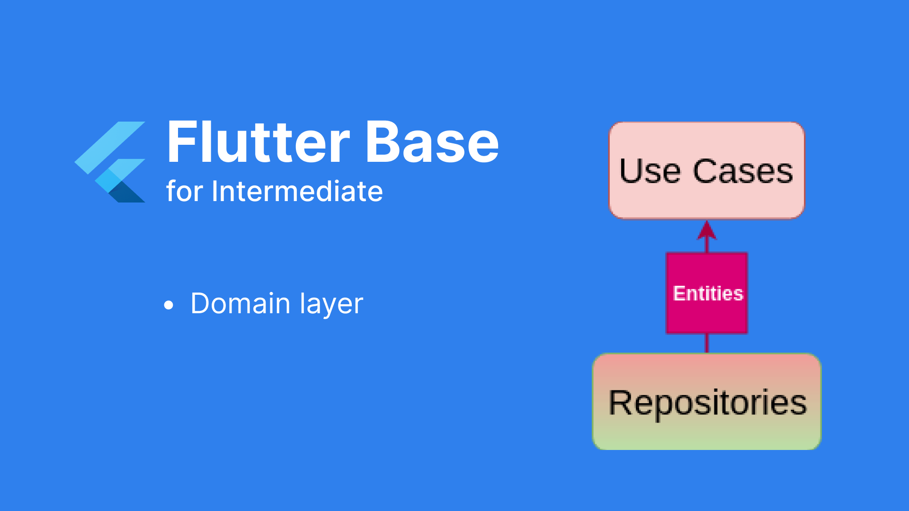

Implementing Flutter Base - Part 4: Details - Domain Layer
I. Tasks
The task of this layer is primarily to handle the business logic within the application, which is contained in use cases. It connects to the data layer based on interfaces for repositories.

II. The tasks that need to be handled.
Corresponding to the diagram above, in the Domain layer, we will have:
- Implement use cases
- Implement entities
- Implement interface repositories and handle the automatic object casting.
III. Detailed processing
1. Implement Use cases
Many of you may wonder why we need to have use cases for handling business logic when in the Bloc pattern, the bloc itself contains some logic. So, why do we need use cases? However, that is a minor misconception because it confuses business logic processing with presentation logic processing at the level of interaction between users and various features. Being able to differentiate between these two separate types of logic allows us to reuse code effectively in use cases.
A small example to illustrate the usefulness of use cases is a logout logic. Here, we need to perform tasks such as clearing user data and unsubscribing from FCM (Firebase Cloud Messaging). Now, imagine that in your application, there are two different places where a user can log out: one is on the profile page, and the other is on the home page, where there's a personal icon that, when clicked, displays a dialog with a logout button. In such a scenario, it's easy to reuse a single LogoutUseCase to handle logout.
Each use case has a well-defined input and output, making it easy to
perform testing.
2. Implement entities
3. Implement interface repositories and handle the automatic object casting.
Next is the completion of repositories, which I promised to explain in detail in this part. The domain layer only contains interfaces for repositories, while the implementation lies in the data layer. The most important aspect here is to automatically cast the received data from the remote data source to the appropriate data type. For example, when you perform a login, the data you expect after a successful login should clearly be of type LoginResponse (containing id, token, etc.) and not just a dynamic object. How can we achieve this automatically?
To address this issue, we can use generic types in Flutter. I created an object called DataResponse, which represents the data that has undergone the automatic casting of objects returned by repositories. It's similar to ServiceResponse but automatically provides the corresponding return type for successful data.

The important thing is how the automatic data type conversion function works. It's quite simple. We typically receive data from API calls in the following formats:
- Object format: {key: value}
- Array of objects: [1, 2, 3], ["a", "b"], [{key: value}, {key: value}]
- Data formats: true/false, numbers, strings

So we have successfully implemented automatic data type conversion. Now the repositories will look like this: